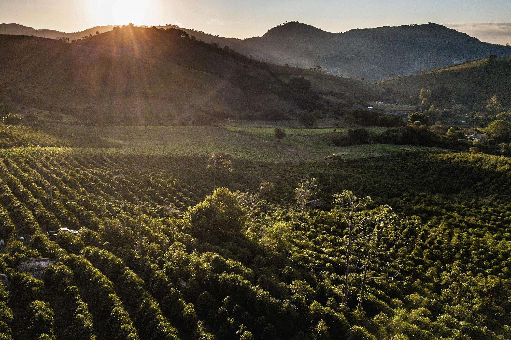

A chegada do café ao Brasil
O cafeeiro é originário da região da Etiópia, no continente africano. Seu consumo se difundiu pela Península Arábica e, posteriormente, alcançou a Europa, onde a bebida ganhou popularidade e passou a ser comercializada em diferentes cidades.

As primeiras mudas
A tradição histórica atribui a introdução do café no Brasil a Francisco de Melo Palheta, em 1727, na região do Pará. Inicialmente cultivado em pequena escala, o produto encontrou condições favoráveis para se expandir para outras partes do território.
Expansão pelo Sudeste
Durante o século XIX, o cultivo ganhou força no Vale do Paraíba e, depois, no interior paulista e em outras áreas do Sudeste. O crescimento das lavouras estimulou a construção de ferrovias, o desenvolvimento de cidades, a ampliação dos portos e a formação de redes comerciais. Esse processo também esteve ligado à escravidão e às profundas desigualdades sociais do período.
Com a abolição da escravidão, em 1888, e as mudanças no mercado de trabalho, a cafeicultura passou por transformações, incluindo a expansão do trabalho assalariado e da imigração.
Modernização da cafeicultura
Ao longo do século XX e até os dias atuais, pesquisas agronômicas, melhoramento genético, mecanização, técnicas de irrigação e práticas de manejo contribuíram para mudanças na produtividade e na qualidade. A produção brasileira tornou-se diversificada, atendendo desde o mercado de cafés tradicionais até o segmento de cafés especiais.